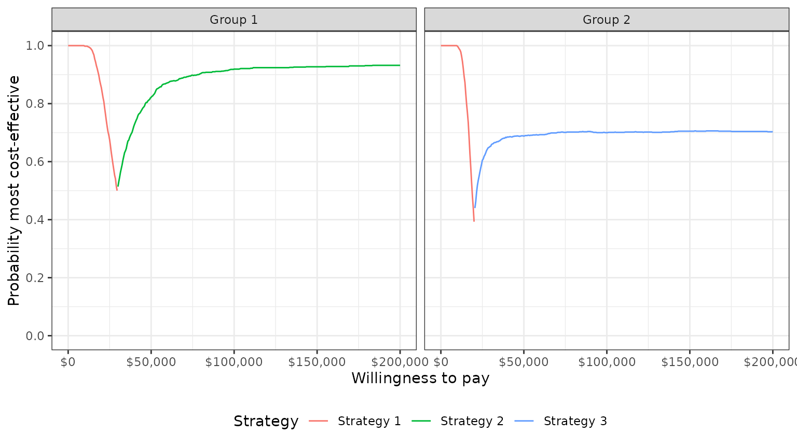
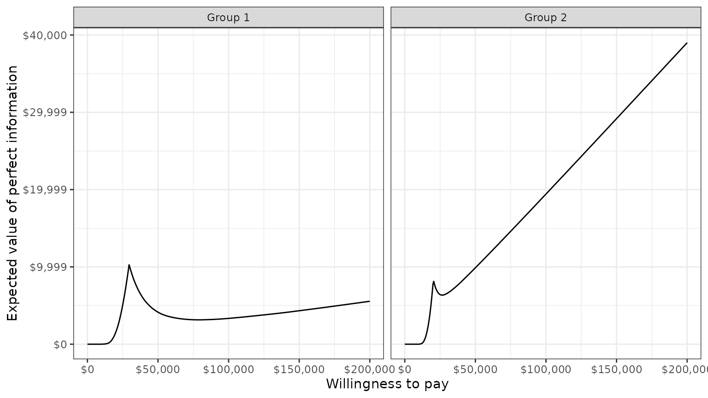

hesim provides functions for using simulated costs and
quality-adjusted life-years (QALYs) from a probabilistic sensitivity
analysis (PSA) for decision-analysis in a cost-effectiveness framework,
including representing decision uncertainty and conducting value of
information analysis. Common metrics that can be produced include the
following:
Cost-effectiveness analysis (CEA) can be performed for a single target population or for different subgroups. The latter is sometimes referred to as individualized CEA (iCEA).
The rest of this article provides an overview of CEA and how it can
be conducted using hesim. The perspective is Bayesian in
nature in that it is concerned with estimating the distribution of
outcomes rather than just expected values (Baio
2012; Baio and Dawid 2015). It also shows how an iCEA can be
performed so that both optimal treatments and the cost-effectiveness of
those treatments vary across individuals (Basu
and Meltzer 2007; Espinoza et al. 2014).
Decision theory provides a formal framework for making treatment decisions based on the utility that a therapy provides to a patient population. Decisions are typically made using a net benefit approach grounded in expected utility theory. The optimal treatment strategy is the one that maximizes expected NMBs where expected NMBs are calculated by averaging over the patient population and uncertain parameters \(\theta\). For a given subgroup \(g\) and parameter set \(\theta\), NMBs are computed as the difference between the monetized health gains from an intervention less costs, or,
\[ \begin{aligned} NMB_g(j,\theta) = e_{gj}\cdot k- c_{gj}, \end{aligned} \]
where \(e_{gj}\) and \(c_{gj}\) are measures of clinical effectiveness (e.g. QALYs) and costs in subgroup \(g\) using treatment \(j\) respectively, and \(k\) is a decision makers willingness to pay (WTP) per unit of clinical effectiveness. The optimal treatment for a given subgroup is the one that maximizes expected NMBs,
\[ \begin{aligned} j^{*}_g = \text{argmax}_j E_{\theta} \left[NMB_g(j,\theta)\right]. \end{aligned} \]
In practice, new interventions are usually compared to a standard treatment often referred to as the comparator. In these cases, a new treatment in a given subgroup is preferred to the comparator if the expected incremental net monetary benefit (INMB) of the new treatment is positive; that is, treatment 1 is preferred to treatment 0 in subgroup \(g\) if \(E_\theta \left[INMB_g\right] > 0\) where the INMB in a particular subgroup is given by
\[ \begin{aligned} INMB_g(\theta) = NMB_g(j = 1, \theta) - NMB_g(j = 0, \theta). \end{aligned} \]
Treatments can be compared in an equivalent manner using the ICER. The most common case occurs when a new treatment is more effective and more costly so that treatment \(1\) is preferred to treatment \(0\) in subgroup \(g\) if the ICER is less than the WTP threshold \(k\),
\[ \begin{aligned} k > \frac{E_\theta [c_{g1} - c_{g0}]}{E_\theta [e_{g1} - e_{g0}]} = ICER_g. \end{aligned} \] There are three additional cases:
Expected NMBs are expected values, which implies that NMBs are uncertain and that optimal treatment strategies may be selected incorrectly. This uncertainty can be quantified using PSA, which uses Bayesian and quasi-Bayesian techniques to estimate the distribution of NMBs given the distribution of the parameters for each treatment strategy.
Since the joint distribution of the model parameters cannot be derived analytically (except in the simplest cases), the distribution of \(\theta\) is typically approximated by simulating the parameters from suitable probability distribution and calculating relevant quantities of interest as a function of the simulated parameters. For each treatment strategy and subgroup, PSA therefore produces \(n\) random draws from the distribution of clinical effectiveness and costs,
\[ \begin{aligned} e_{gj} &= [e_{gj}^1, e_{gj}^2, \dots, e_{gj}^n] \\ c_{gj} &= [c_{gj}^1, c_{gj}^2, \dots, c_{gj}^n]. \end{aligned} \]
Below we simulate costs and QALYs for three treatment strategies and
two subgroups (in a real world analysis, this output would be derived
from economic models like those supported by hesim).
Strategy 1 is the current standard of care; it is the cheapest therapy,
but also the least efficacious. Strategies 2 and 3 are equally costly,
but Strategy 2 is more effective in subgroup 1 while Strategy 3 is more
effective in subgroup 2.
set.seed(131)
n_samples <- 1000
# cost
c <- vector(mode = "list", length = 6)
names(c) <- c("Strategy 1, Grp 1", "Strategy 1, Grp 2", "Strategy 2, Grp 1",
"Strategy 2, Grp 2", "Strategy 3, Grp 1", "Strategy 3, Grp 2")
c[[1]] <- rlnorm(n_samples, 2, .1)
c[[2]] <- rlnorm(n_samples, 2, .1)
c[[3]] <- rlnorm(n_samples, 11, .15)
c[[4]] <- rlnorm(n_samples, 11, .15)
c[[5]] <- rlnorm(n_samples, 11, .15)
c[[6]] <- rlnorm(n_samples, 11, .15)
# effectiveness
e <- c
e[[1]] <- rnorm(n_samples, 8, .2)
e[[2]] <- rnorm(n_samples, 8, .2)
e[[3]] <- rnorm(n_samples, 10, .8)
e[[4]] <- rnorm(n_samples, 10.5, .8)
e[[5]] <- rnorm(n_samples, 8.5, .6)
e[[6]] <- rnorm(n_samples, 11, .6)
# cost and effectiveness by strategy and simulation
library("data.table")
ce <- data.table(sample = rep(seq(n_samples), length(e)),
strategy = rep(paste0("Strategy ", seq(1, 3)),
each = n_samples * 2),
grp = rep(rep(c("Group 1", "Group 2"),
each = n_samples), 3),
cost = do.call("c", c), qalys = do.call("c", e))
head(ce)## sample strategy grp cost qalys
## <int> <char> <char> <num> <num>
## 1: 1 Strategy 1 Group 1 6.808115 7.984456
## 2: 2 Strategy 1 Group 1 6.997936 7.984085
## 3: 3 Strategy 1 Group 1 8.183247 8.221359
## 4: 4 Strategy 1 Group 1 7.423647 8.155250
## 5: 5 Strategy 1 Group 1 7.063846 8.292916
## 6: 6 Strategy 1 Group 1 7.234418 8.066187Decision analysis is performed within a CEA framework using the
cea() and cea_pw() functions. The former
summarizes results by simultaneously accounting for each treatment
strategy in the analysis, while the latter summarizes “pairwise” results
in which each treatment is compared to a comparator.
Both are generic functions that can be used to summarize results from
a data.table containing simulated costs and QALYs or from a
hesim::ce object produced from the
$summarize() method of an economic model. In this example
we use a data.table object.
library("hesim")
ktop <- 200000
cea_out <- cea(ce, k = seq(0, ktop, 500), sample = "sample", strategy = "strategy",
grp = "grp", e = "qalys", c = "cost")The first argument is a data.table that contains columns
for the parameter sample (sample), treatment strategy
(strategy), subgroup (grp), clinical
effectiveness (e), and costs (c). Users
specify the names of the relevant columns in their output table as
strings. The other relevant parameter is \(k\), which is a range of WTP values to use
for estimating NMBs.
Likewise, we can use cea_pw() to summarize the PSA when
directly comparing the two treatment strategies (Strategy 2 and Strategy
3) to the comparator (Strategy 1). The same inputs are used as in
cea() except users must specify the name of the comparator
strategy.
cea_pw_out <- cea_pw(ce, k = seq(0, ktop, 500), comparator = "Strategy 1",
sample = "sample", strategy = "strategy", grp = "grp",
e = "qalys", c = "cost")The primary metrics are the ICER and representations of decision
uncertainty including cost-effectiveness planes, CEACs, CEAFs, and the
EVPI. Plots using ggplot2 graphics
can be quickly generated with the plot_ceplane(),
plot_ceac(), plot_ceaf(), and
plot_evpi() functions, respectively, although output is
readily available so users may create custom plots as well.
The ICER is computed with cea_pw() and can be summarized
with theicer() function. icer() creates a tidy
table that can be formatted for prettier printing with
format(). The argument k is the WTP threshold
and is used to compute the INMB. Estimates of incremental QALYs and
incremental costs are computed by averaging over PSA samples. By
default, 95% confidence intervals are presented and are computed using
quantiles from the PSA.
library("magrittr") # Use pipes
icer(cea_pw_out, k = 50000) %>%
format()## Key: <Group, Outcome>
## Group Outcome Strategy 2
## <char> <fctr> <char>
## 1: Group 1 Incremental QALYs 2.05 (0.44, 3.68)
## 2: Group 1 Incremental costs 60,579 (45,170, 80,640)
## 3: Group 1 Incremental NMB 41,980 (-38,916, 122,227)
## 4: Group 1 ICER 29,534
## 5: Group 2 Incremental QALYs 2.47 (0.83, 4.06)
## 6: Group 2 Incremental costs 60,689 (44,088, 80,040)
## 7: Group 2 Incremental NMB 62,588 (-23,058, 143,866)
## 8: Group 2 ICER 24,615
## Strategy 3
## <char>
## 1: 0.51 (-0.75, 1.72)
## 2: 60,750 (44,408, 79,245)
## 3: -35,460 (-100,074, 32,748)
## 4: 120,106
## 5: 3.00 (1.74, 4.19)
## 6: 60,726 (44,978, 82,943)
## 7: 89,198 (25,693, 151,890)
## 8: 20,252The cost-effectiveness plane plots the incremental effectiveness of a treatment strategy (relative to a comparator) against the incremental cost of the treatment strategy. The plot is useful because it demonstrates both the uncertainty and the magnitude of the estimates. Each point on the plot is from a particular random draw from the PSA.
Data for plotting a cost-effectiveness plane comes from the
delta output generated from the cea_pw()
function, which, for each sampled parameter set and treatment strategy,
estimates differences in costs and QALYs relative to the comparator.
head(cea_pw_out$delta)## sample strategy grp ie ic
## <int> <char> <char> <num> <num>
## 1: 1 Strategy 2 Group 1 1.497467 57687.97
## 2: 2 Strategy 2 Group 1 1.428877 65857.23
## 3: 3 Strategy 2 Group 1 3.184584 44830.68
## 4: 4 Strategy 2 Group 1 1.475885 64228.60
## 5: 5 Strategy 2 Group 1 1.045039 58613.55
## 6: 6 Strategy 2 Group 1 1.303221 45173.35The dotted line in the plot is the WTP line, with slope equal to the value of \(k\). For a given \(k\), points below the line are cost-effective while those above it are not.
library("ggplot2")
theme_set(theme_bw())
plot_ceplane(cea_pw_out, k = 50000)A useful summary measure for quantifying uncertainty is the probability that each treatment strategy is the most cost effective. For a particular subgroup, this is estimated from simulation output as the proportion of simulation draws that each strategy has the highest NMB. For example, consider a random sample of 10 draws from the PSA simulation output and suppose k is equal to 50,000.
ce <- ce[, nmb := 50000 * qalys - cost]
random_rows <- sample(1:n_samples, 10)
nmb <- dcast(ce[sample %in% random_rows & grp == "Group 2"],
sample ~ strategy, value.var = "nmb")
setnames(nmb, colnames(nmb), c("sample", "nmb1", "nmb2", "nmb3"))
nmb <- nmb[, maxj := apply(nmb[, .(nmb1, nmb2, nmb3)], 1, which.max)]
nmb <- nmb[, maxj := factor(maxj, levels = c(1, 2, 3))]| sample | nmb1 | nmb2 | nmb3 | maxj |
|---|---|---|---|---|
| 13 | 405726 | 412252 | 484698 | 3 |
| 76 | 400762 | 505159 | 484223 | 2 |
| 373 | 400002 | 494164 | 509141 | 3 |
| 428 | 401576 | 469362 | 486300 | 3 |
| 591 | 406327 | 321313 | 475207 | 3 |
| 645 | 405765 | 472386 | 494958 | 3 |
| 672 | 417981 | 490431 | 478320 | 2 |
| 735 | 397519 | 479065 | 425354 | 2 |
| 807 | 404348 | 428433 | 410789 | 2 |
| 995 | 399232 | 459246 | 460238 | 3 |
mce <- prop.table(table(nmb$maxj))
print(mce)##
## 1 2 3
## 0.0 0.4 0.6Treatments 1, 2, and 3 have the highest NMBs a fraction 0, 0.4, and
0.6 of the time respectively. cea() computes this for a
range of values of \(k\). Relevant
output is stored in the mce element returned by
cea_pw().
plot_ceac(cea_out)In group 1, Strategy 2 provides the greatest NMBs with high probability for almost all reasonable values of k. In group 2, the results are less certain, although Strategy 3 provides the greatest NMBs with a higher probability than Strategy 2 for most values of k.
It is also possible to compare each strategy to a single comparator.
The ceac element returned by cea_pw() contains
the data for the CEACs.
The plot shows that, in subgroup 1, Strategy 2 has larger NMBs than Strategy 1 with very high probability for reasonable values of \(k\). Strategy 3 also has higher NMBs than Strategy 1 with probability over 1/2 for values of \(k\) larger than 120,500. In group 2, both Strategy 2 and Strategy 3 have higher NMBs than Strategy 1 for almost all values of \(k\).
plot_ceac(cea_pw_out)One drawback of a CEAC is that the probability of being cost-effective cannot be used to determine the optimal treatment option. Instead, if a decision-makers objective is to maximize health gain, then decisions should be based on the expected NMB (Barton, Briggs, and Fenwick 2008). The CEAF, which plots the probability that the optimal treatment strategy (i.e., the strategy with the highest expected NMB) is cost-effective, is appropriate in this context.
A CEAF curve can be created by using the best column to
subset to the treatment strategy with the highest expected NMB for each
WTP value and group. plot_ceaf() will quickly generate a
plot of the CEAF.
plot_ceaf(cea_out)
A limitation of the prior measures are that they ignore the magnitude of cost or QALY gains. A measure which combines the probability of being most effective with the magnitude of the expected NMB is the expected value of perfect information (EVPI). Intuitively, the EVPI provides an estimate of the amount that a decision maker would be willing to pay to collect additional data and completely eliminate uncertainty. Mathematically, the EVPI is defined as the difference between the maximum expected NMB given perfect information and the maximum expected NMB given current information. In other words, we calculate the NMB for the optimal treatment strategy for each random draw of the parameters and compare that to the NMB for the treatment strategy that is optimal when averaging across all parameters. The EVPI for subgroup \(g\) is,
\[ \begin{aligned} EVPI_g &= E_\theta \left[\text{max}_j NMB_g(j, \theta)\right] - \text{max}_j E_\theta \left [ NMB_g(j, \theta)\right]. \\ \end{aligned} \]
To illustrate consider the same random sample of 10 draws from our simulation output used above.
# Expected net monetary benefit
enmb <- ce[, .(enmb = mean(nmb)), by = c("strategy", "grp")]
enmb <- dcast(enmb, strategy ~ grp, value.var = "enmb")
strategymax_g2 <- which.max(enmb[[3]]) # Optimal strategy group 2
# Net monetary benefit (with perfect and current information)
nmb <- nmb[, nmbpi := apply(nmb[, .(nmb1, nmb2, nmb3)], 1, max)]
nmb <- nmb[, nmbci := nmb[[strategymax_g2 + 1]]]
kable(nmb, digits = 0, format = "html")| sample | nmb1 | nmb2 | nmb3 | maxj | nmbpi | nmbci |
|---|---|---|---|---|---|---|
| 13 | 405726 | 412252 | 484698 | 3 | 484698 | 484698 |
| 76 | 400762 | 505159 | 484223 | 2 | 505159 | 484223 |
| 373 | 400002 | 494164 | 509141 | 3 | 509141 | 509141 |
| 428 | 401576 | 469362 | 486300 | 3 | 486300 | 486300 |
| 591 | 406327 | 321313 | 475207 | 3 | 475207 | 475207 |
| 645 | 405765 | 472386 | 494958 | 3 | 494958 | 494958 |
| 672 | 417981 | 490431 | 478320 | 2 | 490431 | 478320 |
| 735 | 397519 | 479065 | 425354 | 2 | 479065 | 425354 |
| 807 | 404348 | 428433 | 410789 | 2 | 428433 | 410789 |
| 995 | 399232 | 459246 | 460238 | 3 | 460238 | 460238 |
To calculate EVPI, we average NMBs given current information and
NMBs given perfect information across simulation draws.
## [1] 481362.9
print(enmbci)## [1] 470922.7
print(enmbpi - enmbci)## [1] 10440.18The cea() function performs this same calculation across
all simulation draws from the PSA and for a number of values of \(k\). A plot by group of the the EVPI for
different values of \(k\) is shown
below. The kinks represent values of \(k\) where the optimal strategy changes.
plot_evpi(cea_out)
We might also be interested in aggregating across subgroups. In particular, the total EVPI can be calculated as a weighted average of the group specific EVPIs,
\[ \begin{aligned} totEVPI &= \sum_{g=1}^{G} w_g EVPI_g, \end{aligned} \] where \(w_g \in (0, 1)\) is a weight denoting that proportion of the population represented by subgroup \(g\) and \(\sum_{g=1}^{G} w_g = 1\).
w_dt <- data.table(grp = paste0("Group ", seq(1, 2)), w = c(0.25, .75))
evpi <- cea_out$evpi
evpi <- merge(evpi, w_dt, by = "grp")
totevpi <- evpi[,lapply(.SD, weighted.mean, w = w),
by = "k", .SDcols = c("evpi")]
ggplot(totevpi, aes(x = k, y = evpi)) +
geom_line() + xlab("Willingness to pay") +
ylab("Total EVPI") +
scale_x_continuous(breaks = seq(0, ktop, 100000),
label = scales::dollar) +
scale_y_continuous(label = scales::dollar) +
theme(legend.position = "bottom") The previous analyses allow NMBs and optimal treatment decisions to vary by subgroup. In contrast, most CEAs estimate the treatment, \(j^{*}\), that is optimal when averaging NMBs over the entire population. In particular, if the population is broken up into \(G\) distinct subgroups, the optimal treatment is given by,
\[ \begin{aligned} j^{*} = \text{argmax}_j \sum_{g=1}^{G} w_g E_{\theta}\left[NMB_g(j,\theta)\right]. \end{aligned} \]
Basu and Meltzer (2007) have shown that selecting subgroup specific treatments increases expected net benefits relative to this one-size fits all approach. They refer to additional net benefit as the expected value of individualized care (EPIC), which can be computed in terms of NMBs using the subgroup approach illustrated here as,
\[ \begin{aligned} \sum_{g=1}^G w_g E_{\theta}\left[NMB_g(j^{*}_s,\theta)\right] - \sum_{g=1}^G w_g E_{\theta}\left[NMB_g(j^{*},\theta)\right]. \end{aligned} \]
We can estimate the value of individualized care as follows:
# Compute total expected NMB with one-size fits all treatment
ce <- merge(ce, w_dt, by = "grp")
totenmb <- ce[, .(totenmb = weighted.mean(nmb, w = w)), by = c("strategy")]
totenmb_max <- max(totenmb$totenmb)
# Compute total expected NMB with individualized treatment
itotenmb_grp_max <- apply(as.matrix(enmb[, -1]), 2, max)
itotenmb_max <- sum(itotenmb_grp_max * w_dt$w)
# Compute EVIC
totnmb_scenarios <- c(itotenmb_max, totenmb_max)
names(totnmb_scenarios) <- c("Individualized total expected NMB",
"One-size fits all total expected NMB")
evic <- totnmb_scenarios[1] - totnmb_scenarios[2]
names(evic) <- "EVIC"
print(evic)## EVIC
## 19359.84
print(evic/150000)## EVIC
## 0.1290656Our estimate of the EVIC is $19,359, or in terms of net health benefits, 0.129 QALYs.